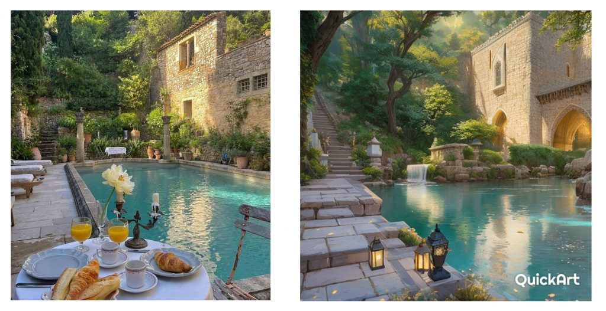

CUM VA INFLUENȚA INTELIGENȚA ARTIFICIALĂ ARTA ȘI ARTIȘTII?
Programele și aplicațiile AI care generează imagini se bazează fie pe un text dat, fie pe baza unei imagini pe care o încarci. Ca să iasă cât de cât ceea ce ți-ai închipuit, trebuie să introduci un text foarte specific până în cele mai mici detalii. Eu, când am vrut să generez o imagine în care o mână rupe un desen nereușit, nu am reușit. Asta pentru că în mintea noastră se formează deja o imagine și noi ne așteptăm ca AI-ul să facă (aproape) exact ceea ce ne închipuiam noi. Fie nu se poate așa ceva, fie am eu idei prea fixe.

Există deja artiști care se folosesc de acest tip de AI pentru a îmbunătăți picturile lor sau pentru a genera idei în momentele în care acestea lipsesc din mintea lor. Am văzut pe cineva care a încărcat o poză cu o pictură mai veche, și cu ajutorul AI-ului a găsit posibile îmbunătățiri ce pot fi aduse. Folosit ca unealtă în acest caz, Ai-ul se dovedește a fi util.

Stânga – imaginea originală, Dreapta – imaginea generată de AI. Cu excepția lampioanelor, care nu sunt la locul lor acolo, există sugestii date de AI demne de luat în considerare – scările și copacul din stânga sus, cascada, intrândul din dreapta.